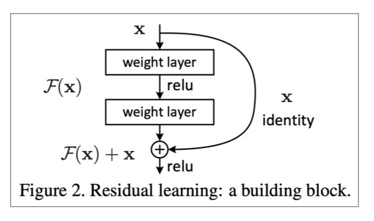

1 梯度不稳定
1.1 概念
在深度神经网络中的梯度是不稳定的，在靠近输入层的隐藏层中或会消失，或会爆炸。这种不稳定性才是深度神经网络中基于梯度学习的根本问题。
1.2 根本原因
前面层上的梯度是来自后面层上梯度的乘积。当存在过多的层时，就会出现梯度不稳定场景，比如梯度消失和梯度爆炸。
划重点：梯度消失和梯度爆炸属于梯度不稳定的范畴
2 梯度消失与梯度爆炸
2.1 概念
梯度消失：在神经网络中，当前面隐藏层的学习速率低于后面隐藏层的学习速率，即随着隐藏层数目的增加，分类准确率反而下降了。这种现象叫梯度消失。
梯度爆炸：在神经网络中，当前面隐藏层的学习速率低于后面隐藏层的学习速率，即随着隐藏层数目的增加，分类准确率反而下降了。这种现象叫梯度爆炸。
其实梯度消失和梯度爆炸是一回事，只是表现的形式，以及产生的原因不一样。
2.2 产生原因
梯度消失：（1）隐藏层的层数过多；（2）采用了不合适的激活函数(更容易产生梯度消失，但是也有可能产生梯度爆炸)
梯度爆炸：（1）隐藏层的层数过多；（2）权重的初始化值过大
隐藏层的层数过多
从深层网络角度来讲，不同的层学习的速度差异很大，表现为网络中靠近输出的层学习的情况很好，靠近输入的层学习的很慢，有时甚至训练了很久，前几层的权值和刚开始随机初始化的值差不多。因此，梯度消失、爆炸，其根本原因在于反向传播训练法则，属于先天不足。具体见下图：

从上图可以非常容易的看出来：对于四个隐层的网络来说，第四隐藏层比第一隐藏层的更新速度慢了两个数量级！！！
激活函数
我们以下图的反向传播为例，假设每一层只有一个神经元且对于每一层都可以用公式1表示，其中σ为sigmoid函数，C表示的是代价函数，前一层的输出和后一层的输入关系如公式1所示。我们可以推导出公式2。
σ为sigmoid函数，其导数的图像如下图所示：
可见，\(\sigma^{'}(x)\)的最大值为\(1/4\)，而我们一般会使用标准方法来初始化网络权重，即使用一个均值为0标准差为1的高斯分布。因此，初始化的网络权值通常都小于1，从而有 \(|\sigma^{'}(z)w|<1/4\)。对于2式的链式求导，层数越多，求导结果越小，最终导致梯度消失的情况出现。所以说，sigmoid函数一般不适合用于神经网络中，那神经网络中应该用哪些激活函数呢？等等就为你揭晓！
3 解决梯度消失和爆炸的方法
3.1 引入门控机制
3.2 残差连接(Residual Connections)
skip connection 跨越隐藏层链接。

3.3 Dense Connections
中间层相互连接。连得越多，梯度问题就越复杂，越稳定。